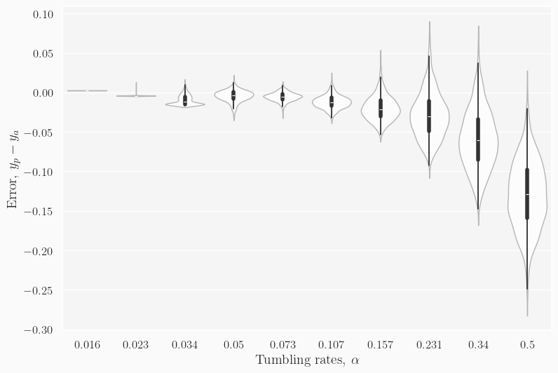

From the previous week, training a network on “black and white” data leads to no regression when predicting “color” data. We now ask the question, had the “black and white” data contain “orientation” color instead, but the orientation is randomly placed, rather than obtained from the evolution of the system, would it perform better when we predict “color”?
We can also compare this “scrambled” data to genuine “color” data (i.e. where the orientation comes from the dynamics of the system). For this, we devise to experiments:
Hypothesis: Predicting genuine color data with a model trained on scrambled data should perform the same as predicting with the same scrambled data. We expect this because we expect the orientation distribution for each to match (uniform between 1-4 up to normalization). We expect predicting confused data with a model trained on genuine color data would (1) yield worse predictions (according to our metrics) if the orientation is picked up by the model as a property of the system (as patterns of cluster formation, which hints at the tumbling rate), and (2) yield no improvement if the orientation is not picked up by the model as a property the system.
Experiment 1a: inject into the model information on the 4 degrees of freedom and predict with a dataset where the orientation is fully scrambled.
Outcome: predictions have roughly the same spread but their centres are substantially off
Models:magic7474
Experiment 1b: train only on scrambled/confused data and predict with a dataset where the orientation is genuine.
Outcome: predictions have roughly the same spread and same centres
Models:ring1111
Conclusion: orientation is picked up as a feature of the system. Although training without orientation, but where the noise is random, provides good prediction of images with real orientation injected anyway. Albeit, the model does moderately well at low tumbling rate, indicating that it does “confuse” orientation a bit.
Plots for training with orientation
Trained on SGD, with a learning rate of 0.008, for 45 epochs.
Code
import warningswarnings.filterwarnings("ignore")import osos.chdir("/project/persistent-exclusion-process/")import numpy as npimport tensorflow as tfimport matplotlib.pyplot as pltfrom src.training_utils import extract_floats, data_load, split_dataset, predict_and_plotnp.set_printoptions(precision=3, suppress=True)
2024-03-05 14:29:16.648463: I tensorflow/core/platform/cpu_feature_guard.cc:182] This TensorFlow binary is optimized to use available CPU instructions in performance-critical operations.
To enable the following instructions: AVX2 FMA, in other operations, rebuild TensorFlow with the appropriate compiler flags.
2024-03-05 14:29:17.151662: W tensorflow/compiler/tf2tensorrt/utils/py_utils.cc:38] TF-TRT Warning: Could not find TensorRT
With orientation scrambled, the model trained on orientation seems to overpredict the orientations, it seems to have gotten close for 0.5, but for the central ’s, it does very poorly.
Number of unique alpha: 10
Shape of x: (30000, 128, 128, 1)
Shape of y: (30000,)
Size of training data: 24000
Size of validation data: 6000
188/188 [==============================] - 3s 15ms/step
Overlap ratio: 0.9
(Min, Max, Avg) STD: 1.8626451e-09 0.04303491 0.015331155
Pearson's correlation coeff: 0.9794483339595415
Overlap ratio: 0.9
(Min, Max, Avg) STD: 1.8626451e-09 0.04303491 0.015331155
Pearson's correlation coeff: 0.9794483339595415
2024-02-29 16:24:15.451320: W tensorflow/core/common_runtime/gpu/gpu_device.cc:2256] Cannot dlopen some GPU libraries. Please make sure the missing libraries mentioned above are installed properly if you would like to use GPU. Follow the guide at https://www.tensorflow.org/install/gpu for how to download and setup the required libraries for your platform.
Skipping registering GPU devices...

With data with genuine orientation
Code
del x,y,x_train,y_train,x_val,y_valx,y,shape = data_load(densities=[0.2], orientation=True, scrambled=False)predict_and_plot(model, x[:800], y[:800])
It might be useful for visualization later when writing the report, I intend to somehow visualize the distribution of orientation to express quantitatively that models trained on orientation can pick up this information.
![]()